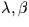
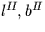

| system | symbols | longitude | latitude | x-y plane | long. zero | RH/LH |
|---|---|---|---|---|---|---|
| horizon | - | azimuth | elevation | horizontal | north | L |
| equatorial | R.A. | Dec. | equator | equinox | R | |
| local equ. | H.A. | Dec. | equator | meridian | L | |
| ecliptic |  | ecl. long. | ecl. lat. | ecliptic | equinox | R |
| galactic |  | gal. long. | gal. lat. | gal. equator | gal. centre | R |
| supergalactic | SGL,SGB | SG long. | SG lat. | SG equator | node w. gal. equ. | R |
The routines
sla_EQECL
and
sla_ECLEQ
transform between ecliptic
coordinates and  ; there is also a routine for generating the
equatorial to ecliptic rotation matrix for a given date:
sla_ECMAT.
; there is also a routine for generating the
equatorial to ecliptic rotation matrix for a given date:
sla_ECMAT.
For conversion between Galactic coordinates and  there are
two sets of routines, depending on whether the
there are
two sets of routines, depending on whether the  is
old-style, B1950, or new-style, J2000;
sla_EG50
and
sla_GE50
are
is
old-style, B1950, or new-style, J2000;
sla_EG50
and
sla_GE50
are  to
to  and vice versa for the B1950 case, while
sla_EQGAL
and
sla_GALEQ
are the J2000 equivalents.
and vice versa for the B1950 case, while
sla_EQGAL
and
sla_GALEQ
are the J2000 equivalents.
Finally, the routines
sla_GALSUP
and
sla_SUPGAL
transform  to de Vaucouleurs supergalactic longitude and latitude
and vice versa.
to de Vaucouleurs supergalactic longitude and latitude
and vice versa.
It should be appreciated that the table, above, constitutes a gross oversimplification. Apparently simple concepts such as equator, equinox etc. are apt to be very hard to pin down precisely (polar motion, orbital perturbations ...) and some have several interpretations, all subtly different. The various frames move in complicated ways with respect to one another or to the stars (themselves in motion). And in some instances the coordinate system is slightly distorted, so that the ordinary rules of spherical trigonometry no longer strictly apply.
These caveats
apply particularly to the bewildering variety of different
 systems that are in use. Figure 1 shows how
some of these systems are related, to one another and
to the direction in which a celestial source actually
appears in the sky. At the top of the diagram are
the various sorts of mean place
found in star catalogues and papers;
systems that are in use. Figure 1 shows how
some of these systems are related, to one another and
to the direction in which a celestial source actually
appears in the sky. At the top of the diagram are
the various sorts of mean place
found in star catalogues and papers;![[*]](foot_motif.gif) at the bottom is the
observed
at the bottom is the
observed  , where a perfect theodolite would
be pointed to see the source; and in the body of
the diagram are
the intermediate processing steps and coordinate
systems. To help
understand this diagram, and the SLALIB routines that can
be used to carry out the various calculations, we will look at the coordinate
systems involved, and the astronomical phenomena that
affect them.
, where a perfect theodolite would
be pointed to see the source; and in the body of
the diagram are
the intermediate processing steps and coordinate
systems. To help
understand this diagram, and the SLALIB routines that can
be used to carry out the various calculations, we will look at the coordinate
systems involved, and the astronomical phenomena that
affect them.
SLALIB --- Positional Astronomy Library